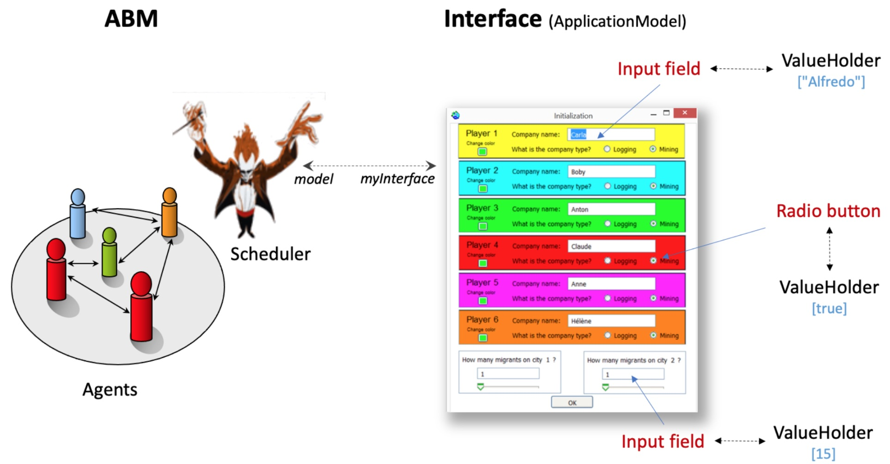

|
Interactive Model
Ce modèle jouet illustre les différentes manières de construire
des interfaces utilisateur (GUI) avec Cormas.
Un tutoriel
présente les concepts et la manière de générer une interface
graphique dans Smalltalk VW. Il est adapté à Cormas afin de créer
votre propre GUI pour votre modèle.

|
|